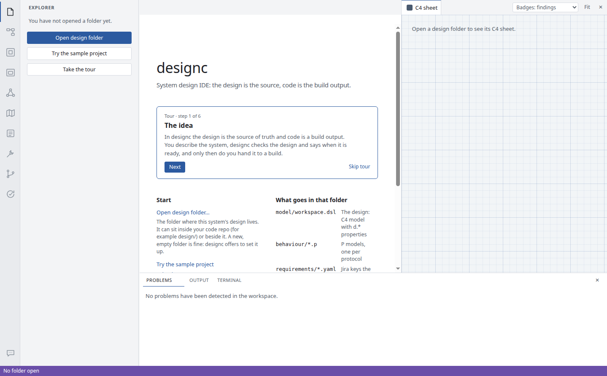
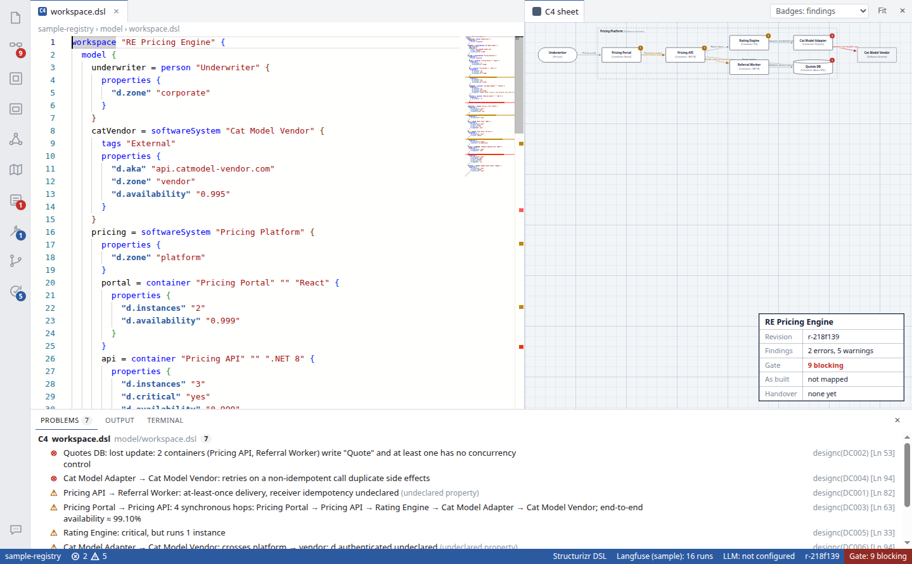
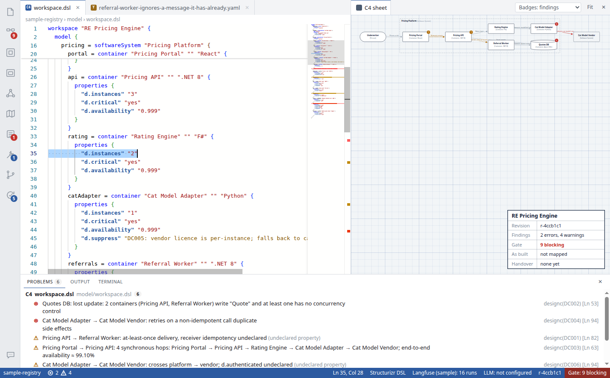
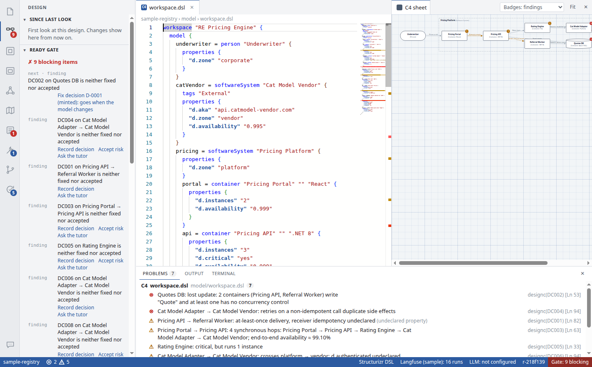
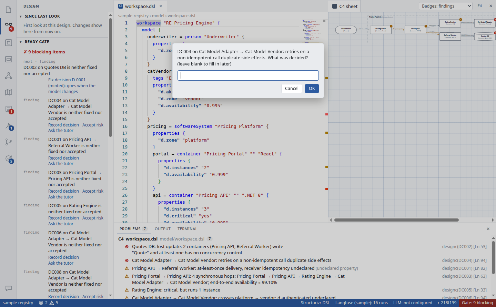
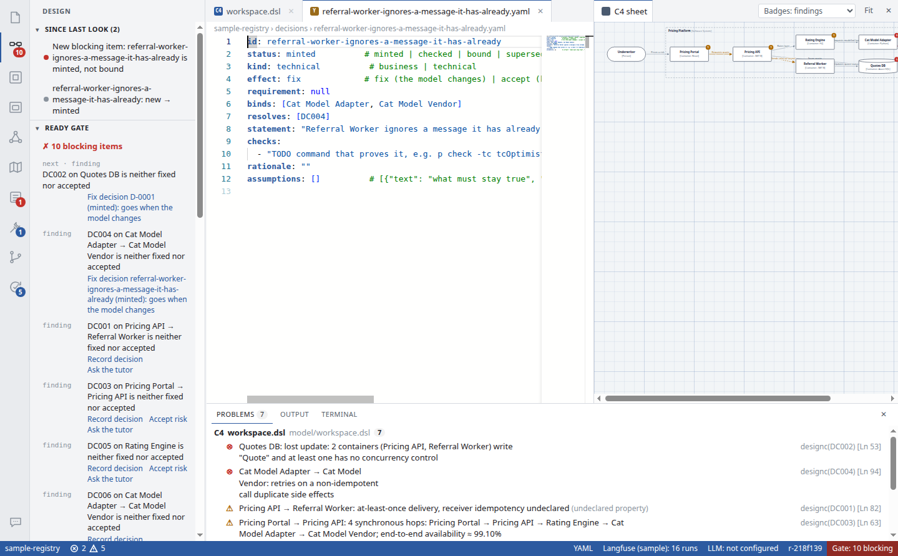
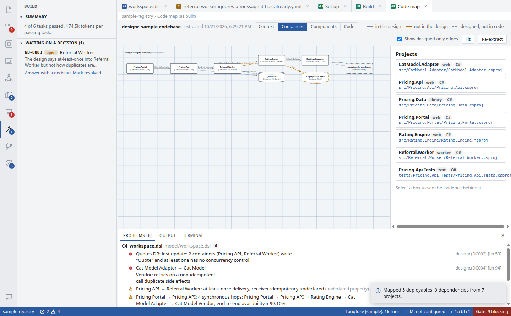
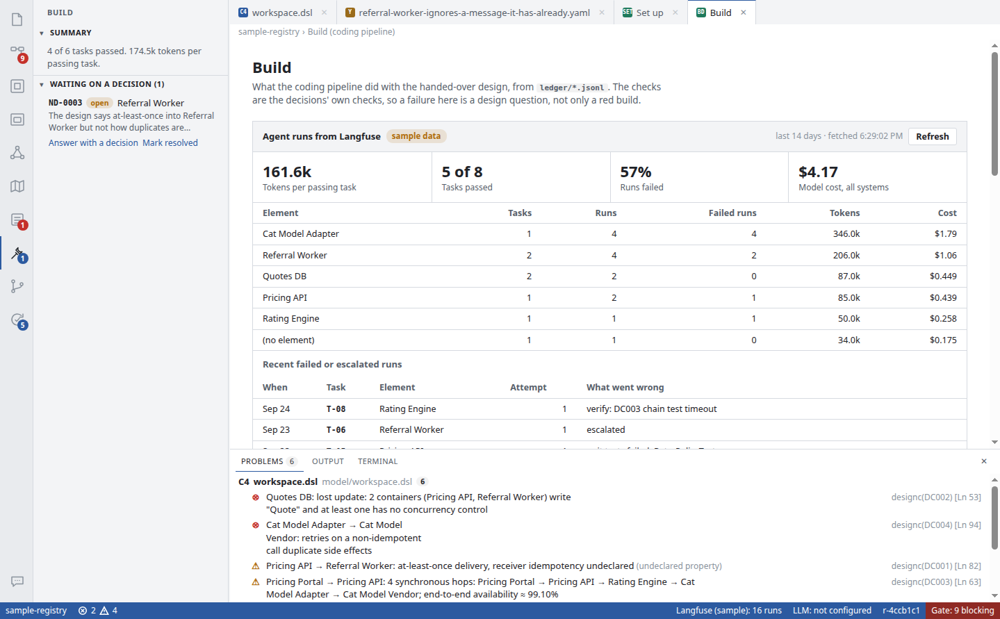
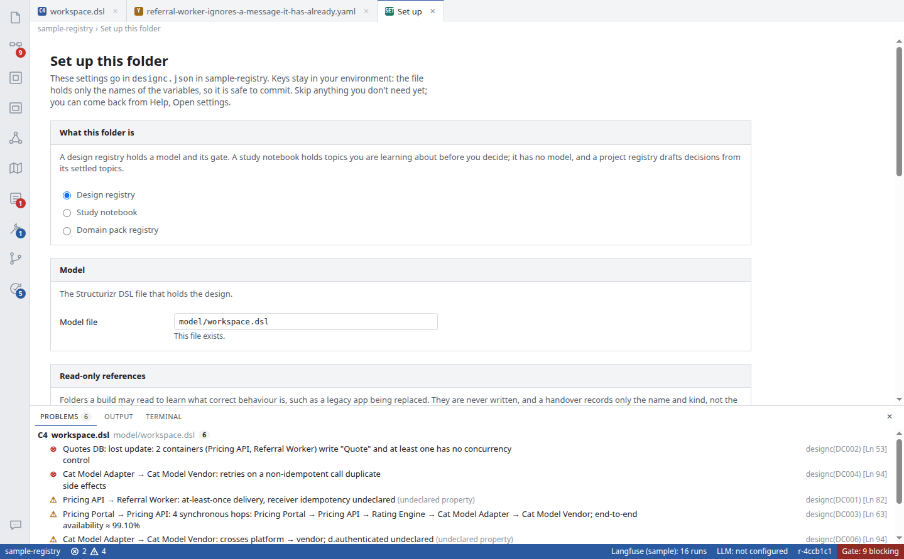
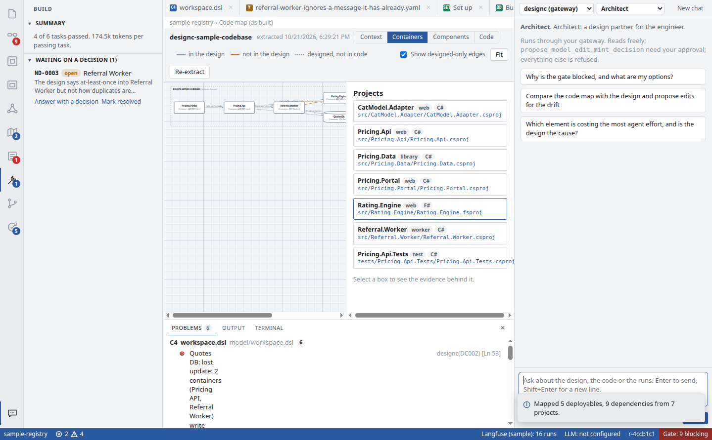

designc guide
A step-by-step guide for your first hour with designc. You follow it on a sample project, so you need no key, no account and no model. Each step says what to click and what you should see.
1. The idea, in one picture
In designc you write down the design of a system, and designc checks it the way a compiler checks code. It tells you what looks wrong or is unknown, and it keeps a yes/no answer called the gate: is this design ready to build? When the gate says yes, you freeze the design into a handover, and a coding pipeline builds from that.
you write the design ──► designc checks it ──► findings + gate
▲ │
│ you fix the model or record │
└──────── a decision for each finding ◄──┘
gate ready ──► Freeze ──► handover ──► a coding pipeline builds it
│
Build and Improve views ◄──── ledger ◄───────┘ (what happened, what escaped)
Everything is plain files in one folder (the registry), so git gives you review and history. Agents can explain and draft things, but only you bind a decision or freeze a handover.
2. Start the app
From the source folder (needs Node 20 or later):
npm install npm start
Or run the installer you were given. The app opens on a welcome page:

- Read the six tour steps if you like (Next, or Skip tour). Help → Take the Tour shows it again later.
- Click Try the sample project. designc copies a small pricing-engine design to
Documents/designc-sample-registry(and its code toDocuments/designc-sample-codebase) and opens it. You are working on a copy, so you can change anything.
3. The screen
If you have used VS Code, the layout will be familiar.

model/workspace.dsl open.| Area | Where | What it is for |
|---|---|---|
| Activity bar | Far left, a column of icons | Switches the view. Hover an icon to see its name. A red number is how many things need you there. |
| Sidebar | Next to the activity bar | The current view's lists and buttons, for example the files or the gate. |
| Editor | Middle | The file you opened, or a full-page view such as Build. |
| C4 sheet | Right | A diagram drawn from the model as you type. Orange and red dots are findings. Close it with × and get it back with View → Toggle C4 Sheet. |
| Panel | Bottom | Problems (the findings), Output (what checks printed) and Terminal. |
| Status bar | Bottom edge | Error and warning counts on the left. On the right: whether a model provider is set up (LLM), and the gate, here Gate: 9 blocking. |
The activity bar, top to bottom
You only need the first two at first. The ones marked "later" make sense once you have a design to build.
| Icon | View | Use it to |
|---|---|---|
| File | Explorer | Open the files in the folder. |
| Boxes and lines | Design | Start here. The gate: everything blocking, in the order to work on it, each line with a button for the next step. Also decisions, requirements and the Freeze button. |
| Square | Canvas | Draw the design with boxes instead of typing it. It writes the same model file. |
| Square | Deployment | Later. Where things run, and what goes down if a node is lost. |
| Nodes | Agent topology | Later. Which AI agents in your design call what. Empty if your design has no agents. |
| Map | Code map | Read an existing codebase and compare it with the design (step 4.5). |
| List | Work | Later. Work items: slices of a requirement, tracked to Done. |
| Hammer | Build | Later. What the coding pipeline did. The sample has made-up history. |
| Branch | Source control | Git: stage, commit, pull and push the folder. |
| Tick | Improve | Later. Defects that got through and which stage should have caught them. |
| Speech bubble (bottom) | Agent panel | Chat with an agent about the design (section 7). |
4. Walkthrough on the sample
About 20 minutes. Do the steps in order.
4.1 Read the model
- Click the Explorer icon, then
model→workspace.dsl. - This is the design, written in Structurizr DSL: people, systems and containers, and arrows between them (
a -> b "description"). The"d.…"lines underpropertiesare what designc checks, for example"d.instances" "1"(how many copies run) or"d.critical" "yes". - Hover a
d.property to see what it means. Typing"d.offers the full list.
4.2 Read the findings
- Look at the Problems panel at the bottom. Each line is a finding: a red one is an error, an orange one a warning. The code on the right (for example
DC002) is the rule, and[Ln 53]the line. - Click a finding. The editor jumps to that line.
- Read one in plain words. "Quotes DB: lost update: 2 containers write "Quote" and at least one has no concurrency control" means two parts of the system write the same data and nothing stops them overwriting each other.
Some warnings say undeclared property. designc asks for a property only where it needs one to decide. That is not an error in the file: it is a question the design has not answered yet.
4.3 Fix one finding by editing the model
- In Problems, click Rating Engine: critical, but runs 1 instance. The editor jumps to line 35.
- Change
"d.instances" "1"to"d.instances" "2". - Press Ctrl+S.

That is the main loop: change the design, save, and see what designc thinks now.
4.4 Look at the gate
- Click the Design icon (second from the top).
- Under Ready gate is the list of everything still blocking (the status bar shows the count). The first line is marked
next: start there. - Each line has its own buttons. For a finding: Record decision, Accept risk, and Ask the tutor (needs an agent, section 7).

4.5 Record a decision
Not every finding is fixed by editing the model. Sometimes the answer is a rule the code must follow, such as "the worker ignores a message it has already processed". You record that as a decision.
- On a finding in the gate list, for example DC004 on Cat Model Adapter, click Record decision.
- A box asks what was decided. Type one sentence and click OK.

designc writes the decision to decisions/<name>.yaml and opens it:

status: minted means drafted, not yet agreed. Under checks goes a command that proves the decision holds.- Fill in
rationale(why) and replace the TODO undercheckswith a real command if you have one. A check is a shell command: exit code 0 means it passed. - Back in the Design view, the gate now has a line for this decision with a Bind button. Binding means "I accept this as part of the design". Only a person can bind; agents can draft but never bind.
Notice the gate went up by one when you recorded the decision. That is expected: a draft decision blocks until someone binds it and its check passes.
4.6 Compare the design with the code
- Click the Code map icon (the map), then Extract the as-built map. The sample already points at its codebase.
- designc reads the code (it never changes it) and draws what is actually built.

Click a box to see the evidence: which file and line made designc draw it. The difference between the two is called drift.
4.7 What you cannot do on the sample
Freeze (in the Design view) is refused because the gate is not ready. This is on purpose: a handover can only be made from a design with nothing blocking, and only by a person.
5. The other views, briefly
These show what happens after a handover. On the sample they show made-up data marked sample data.

- Build: runs, cost, failures and questions from the pipeline. A question here (Waiting on a decision) also blocks the gate until you answer it.
- Work: work items. Start, run the gates, mark Done. Done needs evidence: a passing gate at a commit that is on main.
- Improve: escapes (defects that got through) and which stage should have caught them, so the rules get better over time.
6. Set up your own folder
Do this once the sample makes sense.
6.1 Create and open the folder
- Make an empty folder, for example
design/inside your code repository. Beside it works too. - In designc: File → Open Design Folder… (or Open design folder on the welcome page) and choose it.
- designc sees there is no
designc.jsonand opens Set up this folder.

6.2 Fill in the Set up page
| Section | What to choose the first time |
|---|---|
| What this folder is | Design registry. (A study notebook is for researching a topic before deciding; a domain pack is for sharing domain rules between teams.) |
| Model | Keep model/workspace.dsl and tick Create it with a small starter model. |
| Read-only references | Skip. Used to point a build at a legacy app it is replacing. |
| Model provider (LLM) | Skip for now, or see 6.3. You need it only for the built-in agent and the Grill-me button. |
| Langfuse | Skip. It is where a pipeline's agent runs are traced; Build reads them from there. |
Click Create designc.json. You now have designc.json and a starter model. Open the model and start describing your system; findings appear as you type.
To compare with code later, add "codebase": "../path-to-your-repo" to designc.json (relative to the folder), or use Choose codebase folder on the Code map.
6.3 Keys: where they go
This is the part that trips people up. designc.json never holds a key, only the name of an environment variable, so the file is safe to commit. The key itself must be in the environment before designc starts, because the app reads it from its own process.
- In a terminal, from the designc source folder, run
scripts/setup-wizard.sh path/to/your/folder. It asks step by step, writes only variable names todesignc.json, and saves the keys to~/.config/designc/env, outside every repo. - Start designc from a terminal that has loaded them:
source ~/.config/designc/env && npm start -- path/to/your/folder
- The status bar's LLM item should no longer say not configured. If it still does, the key was not in the environment when the app started.
Started from a desktop shortcut or the installer, the app does not see variables set only in a terminal. Either start it from that terminal, or set the variable for your whole session.
6.4 The trust question
The first time you run a check, use git or open the terminal in a folder, designc asks whether you trust it, as VS Code does. Checks are shell commands from the folder's files, so only trust a folder whose contents you know. You can trust just this folder, the repository around it, or the parent folder.
6.5 A first model
If you skipped the starter, this is enough to begin:
workspace "My system" {
model {
user = person "User"
app = softwareSystem "My app" {
web = container "Web" "" "React"
api = container "API" "" ".NET 8"
db = container "Database" "" "SQL Server" { tags "Database" }
}
user -> web "Uses"
web -> api "Calls" "HTTPS"
api -> db "Reads and writes"
}
}
Save it and look at Problems and the C4 sheet. Then go to the Design view and work the gate from the top.
7. Agents (optional)
The speech bubble at the bottom of the activity bar opens the agent panel.

- Which agent: designc (gateway) uses the model provider from section 6.3. Claude Code (and other ACP agents) uses that tool's own login instead, so if you already use Claude Code you can pick it with no key in designc.
- Role: Architect (talk about the design), Grill-me (asks you hard questions, one at a time), Tutor (explains, never writes), Analyst (for Improve).
- An agent can read everything in the folder. When it wants to write, you see a card with the change and Approve or Reject. Nothing is written without that.
Terms
| Term | Meaning |
|---|---|
| Registry | The folder that holds one design. Plain files, kept in git. |
| Model | The design file, model/workspace.dsl, in Structurizr DSL with d.* properties. |
| Finding | Something the checker thinks is wrong or unknown in the design. Rule codes DC000 to DC009. |
| Gate | The yes/no answer to "is this design ready to build?", with the list of what still blocks. |
| Decision | A recorded answer to a finding or requirement. Minted (drafted) → checked → bound (agreed by a person). |
| Check | A shell command that proves a decision holds. Exit code 0 is a pass. |
| Accept risk | Keeping a finding on purpose. It must rest on a business decision someone agreed. |
| Requirement | A piece of work from outside, such as a Jira ticket, mapped to the elements it touches. |
| Handover | A frozen copy of a ready design that a pipeline builds from. Never rewritten. |
| Code map, drift | The design read back from the code, and where the two differ. |
| Ledger | Append-only log of what happened (checks, handovers, pipeline runs), in ledger/*.jsonl. |
| Escape | A defect that got through. Improve records which stage should have caught it. |
When you are stuck
| What you see | What to do |
|---|---|
| The welcome page and nothing else | No folder is open. Click Try the sample project. |
| "LLM: not configured" in the status bar | Expected until you do 6.3. Everything except the built-in agent and Grill-me works without it. |
| The gate went up after I did something | A new draft decision blocks until it is bound. Look at the new line in the gate. |
| Freeze is refused | The gate is not ready, a file has unsaved changes, or a gate file is not committed. The message says which. |
| A check failed with exit code 127 | The shell could not find the program. Output names it. |
| Extract says it found no container | Point codebase at the folder that holds the app, not only a library or test project. |
| A finding I do not understand | Ask the tutor on it, or Help → Design Properties Reference for what each d.* means. |
More detail: README.md in the app folder covers every property and rule; AGENTS.md is the technical reference for people changing designc.